Masterpiece – Activity Level Guide
How fit do you need to be for the Masterpiece trip?
The Masterpiece trip is an activity level 2-4* and is designed for you to have maximum flexibility. You can scale your activity level up to a 4, down to a 2, or anywhere in between every day, so you can enjoy New Zealand at a pace that's right for you. Walk on well-formed tracks and enjoy a mixture of day walks and activities that showcase the best of New Zealand.
Activity Level 2*. These boots are made for walking...but not too far. You enjoy the outdoors and like to explore, at a pace that's right for you. You like to take time to enjoy your surroundings, learn from your guides and soak in the experience.
Activity Level 3*. You love staying active on your holiday and know that travel isn't a race, it's just as much about the journey as the destination! Fresh air, experiencing new activities with your guides and ending the day with a delicious meal and great conversation leave you feeling invigorated.
Activity Level 4*. You know sometimes the best views need to be earned, and you love a wee bit of a challenge. You're comfortable spending a good portion of the day on your feet exploring well-formed trails with your guides, moving towards your goal.
"This was a wonderful trip, and gave us a good overview of the South Island. It was helpful to know that the guides also felt we got to see all of their favourite places. I loved that this tour had different activity levels so my mom and I could both enjoy ourselves. The guides and our fellow trip mates were all great people and made the experience even better."
Callie Pfister | USA, ID | January 2024
You can view a day-by-day breakdown of the activities and hikes below, and if you have any questions at all get in touch, we love to chat!
Day 1: Walk the Arrow River Trail
Today we’ll travel to the historic Arrowtown, a quaint old gold-mining settlement just a short drive from Queenstown, where you’ll walk the Arrow River Trail along the Kawarau River, towards the world’s first commercial bungy bridge, which is still in operation today and makes for some great entertainment! The stunning track is a 5km (3.1mi) walk to the Southern Discoveries bridge.
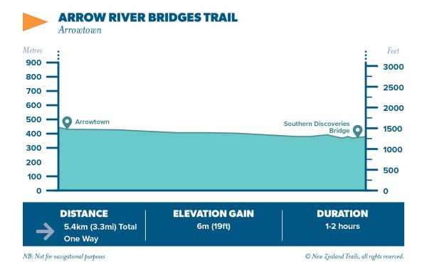
Day 2: Aoraki/Mt Cook National Park hiking options
Today you'll have options to scale your activity level up or down to suit your preference, so you can explore Aoraki/Mt Cook at a pace that's right for you. Whichever hikes you choose, you'll be rewarded with incredible scenery in this UNESCO World Heritage area under the watchful gaze of Aoraki/Mt Cook – New Zealand's highest peak.
In the morning we'll hike the Tasman Glacier View, Blue Lakes Track, and Governors Bush Track. On the Tasman Glacier View and Blue Lakes Track you'll be treated to spectacular views of the Tasman Glacier, New Zealand's longest glacier, as well as Aoraki/Mt Cook itself. From your vantage point above Tasman Lake, you'll have excellent views of the glacier's terminal face and giant icebergs floating across the lake.
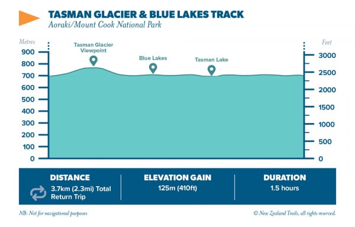
On the Governors Bush Track you'll enjoy a gentle walk through New Zealand's lush native forest and experience another side of Aoraki/Mt Cook National Park. As you make your way round this well-maintained loop track, you'll learn all about our native bush from your expert New Zealand guides.

This afternoon you'll have the choice to explore the Sealy Tarns Track or make your way up to Kea Point and the Hooker Valley Lookout for spectacular views of Hooker Lake and Aoraki/Mt Cook's towering peak.
The most physically challenging option of the day is the hike up to Sealy Tarns. Providing spectacular panoramic views of the National Park's many snow-capped peaks and Sefton Glacier. The Sealy Tarns are reached via a steady and steep climb on a well-built track (think: Stairmaster). The views are worth every step, even by South Island standards.
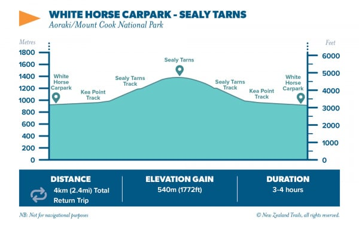
For those seeking a more relaxed option, we'll hike to Kea Point and the Hooker Valley Lookout. On this well-formed track, you'll enjoy a steady climb on a gentle gradient as you make your way to the Hooker Valley lookout. From here you'll be able to take in Aoraki/Mt Cook and the Hooker Valley in all their glory.
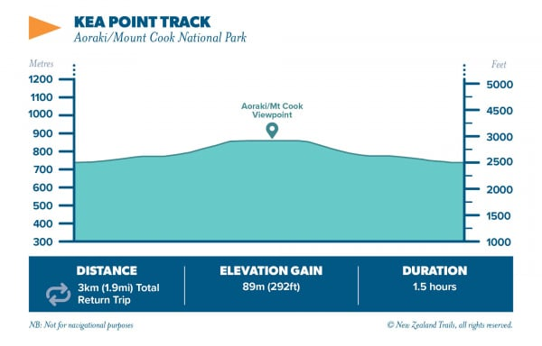
Day 3: Hike Mount John, explore Mackenzie Country & Christchurch
This morning we’ll make the steady climb up Mount John though forest and tussock to the observatory at the top. As we walk, we’ll look out over 360-degree views across the impressive Mackenzie Basin flats and surrounding mountains and lakes.
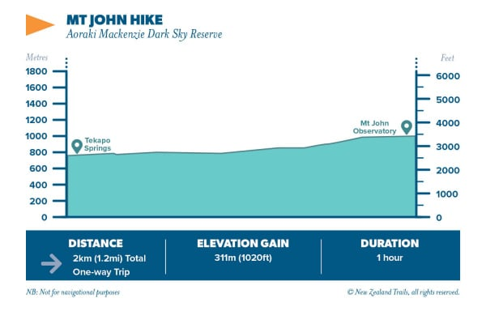
Day 4: Explore Christchurch & Kaikoura Peninsula
After a relaxed breakfast, the morning is yours to explore the city of Christchurch and its many delights. Christchurch is undergoing an urban regeneration project but still retains a garden-like quality with much to see and do. Alternatively, take it up a notch and join your guides on the Godley Head Track. Offering incredible coastal views and the historic remains of some of New Zealand's WWII coastal defences. This afternoon we’ll travel north to the seaside settlement of Kaikoura on the East Coast, where we’ll stay the night.
Day 5: Dolphin Swim and Lochmara Lodge
After an action packed morning swimming with dolphins, you will make your way North to Picton, here you will catch a water taxi across to Lochmara Lodge where you can relax and unwind with a book in a hammock, get the body moving by heading off on a scenic walk nearby or learn all about New Zealand wildlife at one the many interaction activities on offer here.
Day 6: Kayak Queen Charlotte Sound and Marlborough Vineyard
This is your opportunity to explore the Queen Charlotte Sounds by kayak and say "Kia Ora" to the wildlife that thrives in this beautiful region! The kayaking is suitable for beginners and experts alike, and we’ll be joined by specialist guides who’ll share their knowledge of Queen Charlotte Sound, teaching you all the paddling skills you need to enjoy this activity safely. If kayaking isn’t for you, you’ll be able to soak up the scenery of Queen Charlotte Sound from the boat instead.
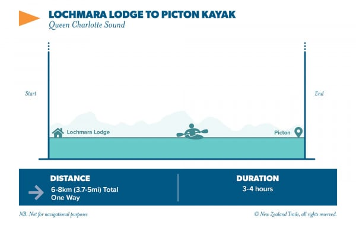
Day 7 – Explore Nelson
Today is yours to enjoy as you wish in Nelson, “the sunniest place in NZ” and the gateway to Abel Tasman National Park. Most of our guests are happy to spend a relaxed day exploring Nelson, browsing the shops and galleries, strolling along the beach or reading a book. Or if you’d prefer something a little more active, you’ll have the option of adding on a guided day trip to explore Abel Tasman National Park on foot or by kayak.

Add on a trip to explore Abel Tasman National Park
Day 8: Coastal Walkway to Tauranga Bay Seal Colony
Today we head to the "wild West Coast" of New Zealand, known for its thundering seas and cliff top coast line. Take the stunning coastal walk that looks out over the Tasman Sea, finishing with the Tauranga Bay Seal Colony. If you're lucky, you might see seal pups frolicking in the rock pools below!
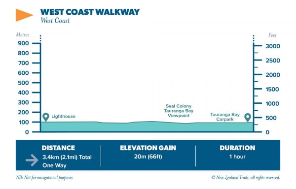
Day 9: Hike Paparoa National Park
On Day 9, towering limestone cliffs, lush rainforest and the crashing ocean feel almost prehistoric! Today, we’ll embark on a stunning hike in the Paparoa National Park - an easy underfoot loop track that takes around 2 hours. Before we head south, we’ll take a short walk to see the famous Pancake Rocks.
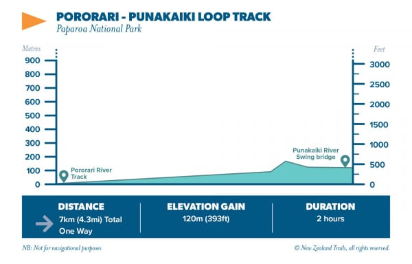
Day 10: Hike Lake Matheson & Haast River Jet Boat
Today we'll walk the Lake Matheson Track where you'll enjoy stunning views of Aoraki/Mt Cook and our towering Southern Alps. Renowned for its still, glassy waters, you'll enjoy spectacular mirror-like reflections across Lake Matheson as we make our way through native forest, learning about the fascinating glacial history of the area.
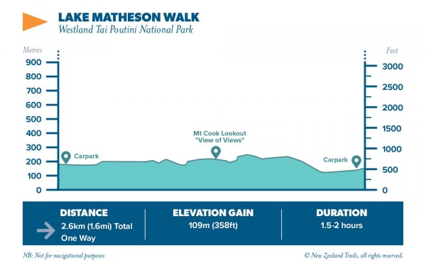
Day 11: Wanaka Hiking options
Today, you can choose from a selection of hikes, or you can opt to stay back and explore the alpine village of Wanaka. If you're looking to get a dose of fresh mountain air, you can join your guides for a hike near Mt Aspiring National Park. The trail heads to Diamond Lake and you’ll have the option to carry on to the Rocky Mountain lookout if you’d like, the full hike takes around 3 hours and finishes at a beautiful viewpoint overlooking Lake Wanaka with views of the dramatic peak of Mount Aspiring.
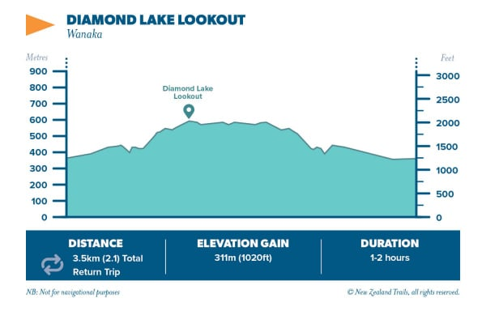

Day 12: Hike the Kepler Track
This afternoon we head further south to Fiordland National Park where we’ll hike a section of the Kepler Track. This is one of our ten Great Walks and winds through beautiful native beech forest. This mostly flat trail is the perfect introduction to hiking in New Zealand, we’ll walk from the Control Gates to Brod Bay on the shoreline of Lake Te Anau. Keep an eye out for the cheeky South Island Robin on the way.
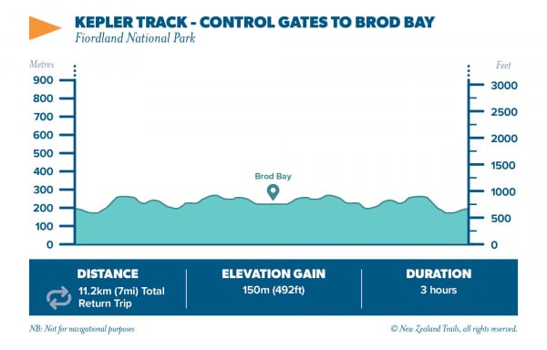
Day 13: Explore Milford Sound and Hike the Routeburn Track (Key Summit)
This morning we will explore Milford Sound by boat, taking in the grand scenery. After disembarking our boat, we’ll head off to discover a gem on one of New Zealand’s Great Walks. Climbing steadily up through the dense beech forest, this walk on the world-famous Routeburn Track is well worth the effort. The view from the top is one of Fiordland’s most iconic scenes - across the snow-capped Mount Christina, Mount Tutoko and the rest of the Darran Mountains – tranquil mountain tarns, jagged peaks, vertical granite cliffs and glacial blue rivers rushing to the Tasman Sea, which is clearly visible down the Hollyford Valley. The total walk time today is around half a day (3 hours) with a lunch stop to remember en route.
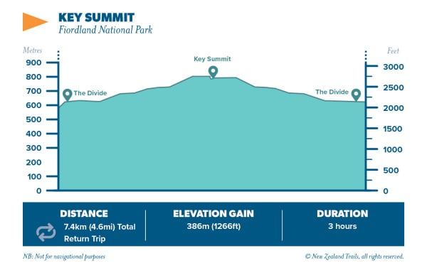
Day 14 – Jack’s Point to Kelvin Heights & Finish in Queenstown
Today we’ll hike the picturesque trail from Jack’s Point to Kelvin Heights (a favourite amongst us locals). We will admire the magnificent alpine scenery and panoramic views of the Remarkables mountain range and Cecil Peak whilst tracing the shores of Lake Wakatipu. The total walking time today is around 3 hours.
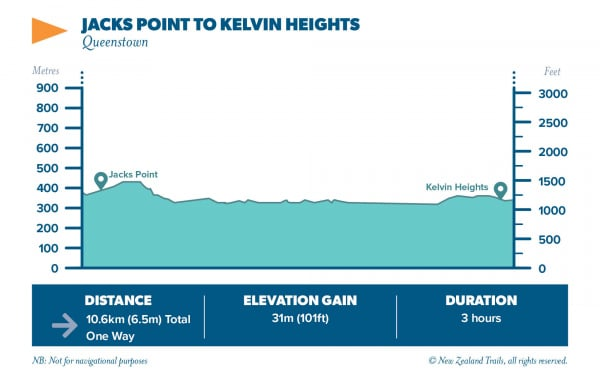
For the full itinerary including all the other things involved on this trip, please read the full day by day itinerary. At the end of your trip, you'll leave for home refreshed, relaxed and rejuvenated.
Haere ra!